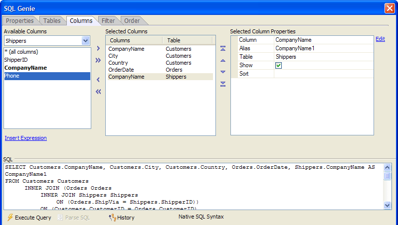

SQL Genie Columns Tab
The Columns tab of the SQL Genie defines the fields that your SQL SELECT statement will return. To select a field for your report.

Any time that the  Execute Query
button is enabled, you may click it to see a sample of the records that
the query will return. At any time you may click the
Execute Query
button is enabled, you may click it to see a sample of the records that
the query will return. At any time you may click the  History button to see a list of SQL statements previously
created in this session in the <span class=Screen>SQL History Dialog</span>.
History button to see a list of SQL statements previously
created in this session in the <span class=Screen>SQL History Dialog</span>.
Make a table selection from the drop down list box at the top left corner of the screen.
Optionally, select "* (all columns)" in the Available Columns list and click
 to add them to the report.
to add them to the report.Optionally, select one or more columns from the Available Columns list and click
to add them to the report.Optionally, click
 to add all columns from the currently selected table
to the report.
to add all columns from the currently selected table
to the report.To remove a column from the report, select it in the Selected Columns list and click
 .
.To remove all columns from the report, click
 .
.Repeat with any other table that you selected on the Tables tab.
Optionally, click Insert Expression to display the <span class=Screen>SQL Expression</span> dialog to select a column or write an expression to add to the Selected Columns list.
The vertical order of columns in the Selected Columns list is their order from left to right on the report. To change the position of a column in the Selected Columns list:
Select it and click
 to move it to the left-most position on the report.
to move it to the left-most position on the report.Select it and click
 to move it to the right-most position on the report.
to move it to the right-most position on the report.Select it and click
 to move it one position left on the report.
to move it one position left on the report.Select it and click
 to move it one position right on the report.
to move it one position right on the report.You may change properties of each column in the Selected Columns list.
|
Property |
Description |
|
Column |
The name of a field or an expression that combines 2
or more columns. Click |
|
Alias |
Creates an alias for the column, which is expressed as an "AS Alias " clause. |
|
Table |
The table that contains the column. |
|
Show |
When selected (TRUE), the column will display on the report. |
|
Data type |
The data type of the selected column. |
|
Sort |
Defines whether to sort the report on this column in ascending or descending order. Your choices here will appear on the Order tab of the SQL Genie and in the ORDER BY clause of the SQL SELECT statement. |
See Also